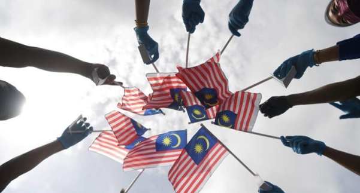
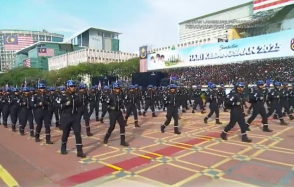
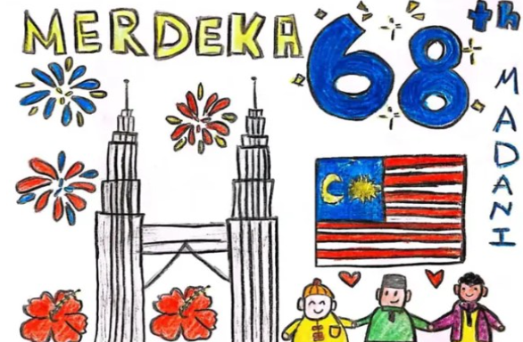

Malaysia marked its 68th National Day on 31 August 2025. The theme “Malaysia MADANI: Rakyat Disantuni” drove the proceedings. More than 100,000 people gathered at Dataran Putrajaya, also known as Putra Square, lined by the Prime Minister’s office, the Putra Mosque, and enduring geometric gardens that frame the central performance area.
BANDAR SERI BEGAWAN (Bernama): From the rhythmic sounds of Kulintangan to the graceful moves of silat, Malaysia’s 68th National Day reception in Brunei was a lively celebration of shared heritage, friendship, and flavours that united Malaysians and Bruneians under one roof.

A WAVE of patriotism swept across Dataran Putrajaya this morning as the 68th National Day celebration, themed ‘Malaysia MADANI: Rakyat Disantuni’, unfolded in a grand and heartfelt spectacle. Thousands of Malaysians, many of whom arrived as early as Saturday evening, filled the square in anticipation of the nation’s most symbolic day.

Starchild : National Day Through Malaysian Children’s Eyes